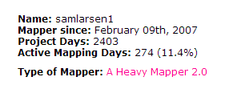
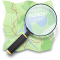
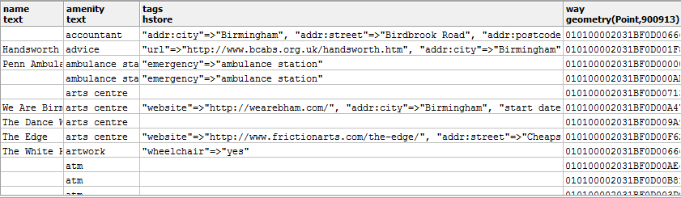
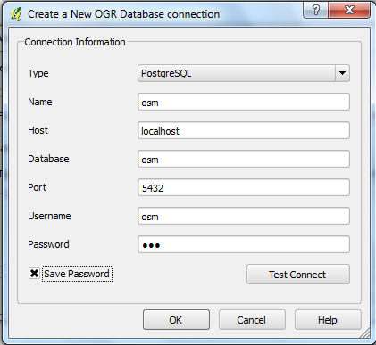
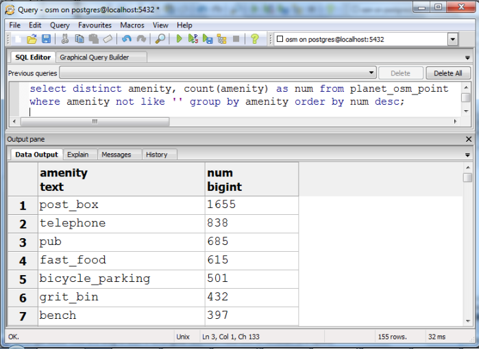
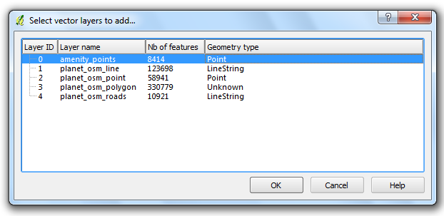
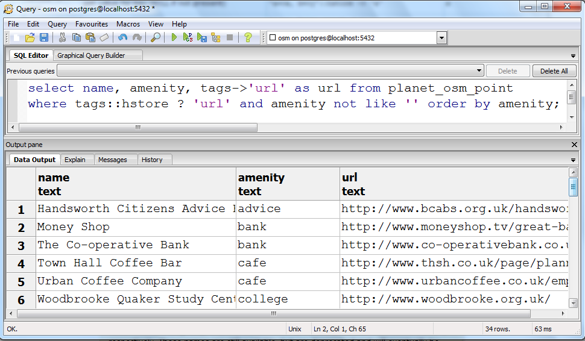
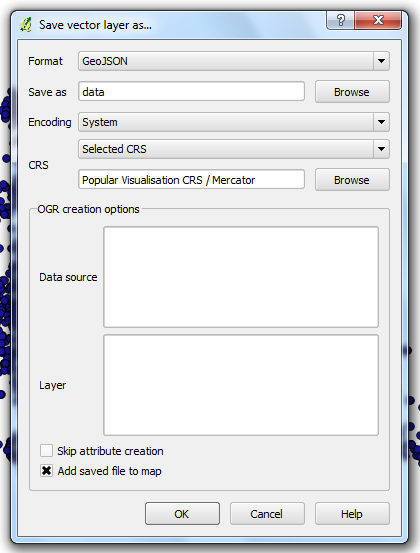

OSM Data on Windows
OSM & Windows Demystified
Sam Larsen, Sopra Group Ltd
@samlarsen1 - sam.larsen -at- uk.sopragroup.com

Why?
It's difficult
Existing Solutions
- Linux, Virtual Machines
- Osm2postgresql
- OpenCageData
- Geofabrik, Osm2Shp
- HOT Data Store, HOT Package (doc)
- Osm2pgsql, Osmosis
Solution

Process
- Download Components
- Postgres & PostGIS
Enterprise DB Stack Builder - Osm2pgsql & style file
- OSM Data
- QGIS
- Postgres & PostGIS
- Create Postgres User Role & DB
(Using postgis template)CREATE ROLE osm LOGIN ENCRYPTED PASSWORD 'md5a6d3a895f1b5e97a65512a4a5d4878af' SUPERUSER CREATEDB VALID UNTIL 'infinity'; CREATE DATABASE osm WITH ENCODING='UTF8' TEMPLATE=template_postgis_20 CONNECTION LIMIT=-1; - Add hstore to DB
CREATE EXTENSION HSTORE;
hstore
Process
- Run osm2pgsql
\osm2pgsql\x64>set pgpassword=osm \osm2pgsql\x64>osm2pgsql -c -k -d osm -U osm -H localhost -P 5432 -S default.style data.osm.pbf - Connect to data in QGIS and take a look
Add new Vector Layer

Process
- Go back to Postgres and look at the data a bit more

Process
- Make a view and add it in qgis
CREATE OR REPLACE VIEW amenity_points AS SELECT planet_osm_point.name, planet_osm_point.amenity, planet_osm_point.operator, planet_osm_point.tags, planet_osm_point.way FROM planet_osm_point WHERE planet_osm_point.amenity !~~ ''::text ORDER BY planet_osm_point.amenity; ALTER TABLE amenity_points OWNER TO osm;

hstore (again)
Process
- Export layers as geoJson or whatever

Process
- Make a viral map?
- Use OSM in exciting and unexpected ways!!
Understand the data
- POIs as Polygons
- Tagging
- Map Features, Taginfo
Results
- Some custom osm data layers
- Deeper understanding of the data
- Understanding of what needs work in your area
Watch out!
- Java
- Folders
- Projections
- osm2pgsql style file
- DATA !!!
Help
- help.openstreetmap.org
- tweet me
Watch this space
- Keep an eye on the community
- User-driven data request UIs
- Common sql files?
THE END
Sam Larsen, Sopra Group
@samlarsen1 - sam.larsen -at- uk.sopragroup.com
Slide deck: Hakim El Hattab / @hakimel